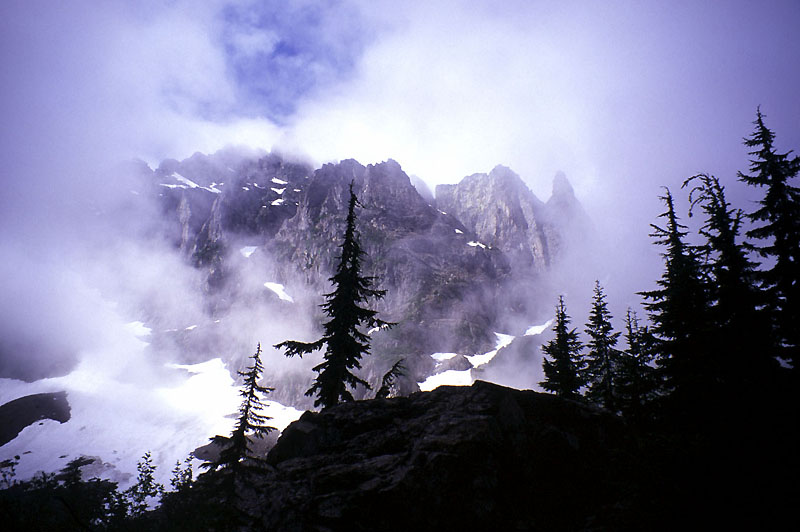

Monte Cristo Peak
I decided to get up early on July 4th and climb Monte Cristo Peak. I was excited to see Glacier Basin for the first time. Riding my bike up to the old mining town (which once boasted a population of 11,000), I thought the day would turn out fine, as patches of blue showed above the mist low in the valley. Hiking above the town, I thought about the Stamper family in “Sometimes a Great Notion,” a book I’m currently reading. They would suit this place: iron debries rusting away beside the trail, roaring waterfalls and dense thickets. Even when it’s dry, the coming damp seems just around the corner.
After climbing the steep trail into the basin, I crossed a rock slide and rounded a corner. Here a beautiful view of East Wilman’s Spire appeared, very dramatic with thick wisps of cloud clinging to the rock faces. I got a picture, hopefully it will come out. The lower cliffs of Glacier Basin were visible, and I mentally pieced a route up a talus slope into a snow gully that bisected the cliffs. Back at the car I had met Julian and his friend who were going to climb East Wilman’s. It is a small world: Julian had met Theron two years before on Mt. Pugh. I listened to Barber’s “Adagio for Strings” as I crossed the gloomy basin floor. After rounding Ray’s Knoll on the left, I climbed the talus slope for 500 feet, then got onto snow that led up into fog. Here I took a wrong turn to vertical cliffs. Eventually I found my way to a narrow snow gully with a small ‘schrund to climb over. Above the gully were extensive snow slopes with no visual clue as to the way to go.
I followed a compass bearing southeast up steepening slopes, using occasional rocks littering the slope as visual clues to stay on track. At 6000 feet I reached rock walls, trying to get around them first on the right, and then to the left. The slope steepened again, but provided good cramponing up into the fog. I was hoping the sun would burn through, having already waited hopefully for 30 minutes below the snow. But the sky remained dark gray above me, and I grew disheartened. At 6500 feet I hung around a while, wondering which way to go to find the 6700-foot notch that would lead me to the south side of the peak. I think I was on track, but with inspiration at a low ebb, I was happy to call it a day. I was also a little apprehensive about crossing around to the south, and finding the right 4th class gully to climb in such “pea soup” fog. I imagined climbing the wrong thing, then having to do sketchy downclimbing. I’d rather save the summit for a sunny day when it could be savored.
Climbing down was more difficult than I expected. I hoped to plunge step for 1000 feet or so, but the snow would alternately collapse under steps or be too hard to get a decent step. It was odd because the angle wasn’t that steep, probably 40 degrees. The times I tried to face out, I slipped, gaining speed and making an exciting self-arrest with my axe. So I resigned myself to a long slow downclimb. I got below the thick cloud, and ate a sandwich on a knoll overlooking Glacier Basin, still a gloomy place. Once beyond the lower cliffs, I stayed on snow, then descended talus and snow on the west side of Ray’s Knoll this time.
I hiked down to the town, and enjoyed a great coast for most of the 4 miles down to the car. On the way out a stunning view of Del Campo Peak peaking out of the clouds nearly derailed me. It’s funny how clouds add so much drama. I’ll be back for Monte Cristo Peak later, maybe late in the fall, eh?
|
 East Wilman's Spire from Glacier Basin |
{kind=link}